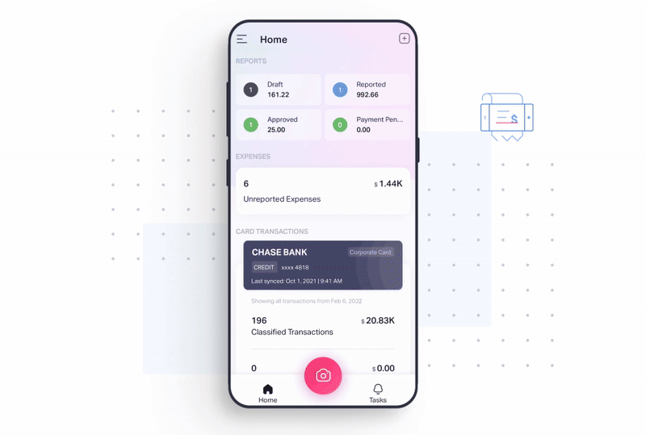
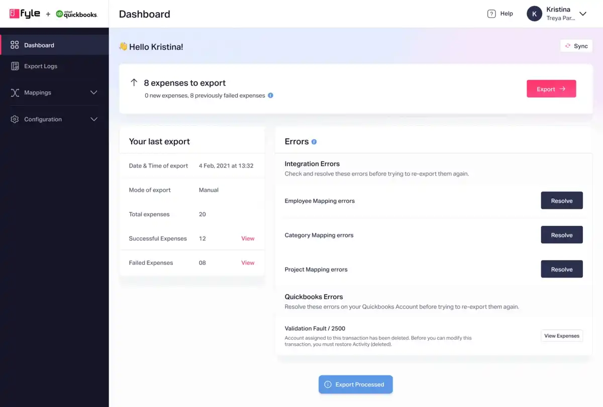
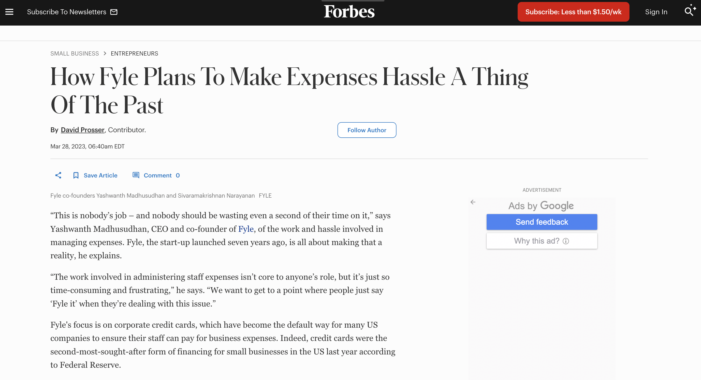

Customer-Solution Fit (CSF)
When I joined Fyle as a senior designer, we were focused on the Indian market, but COVID hit
hard and it impacted business, forcing a strategic pivot to the U.S.
SMB space.
This shift changed our customer base, market dynamics, and product
priorities.
While the product and sales teams conducted customer interviews and demos to validate our
offerings, designers extracted key usability and behavioral insights from call recordings
to shape the product experience for this new market.
At the same time, I was stepping into management for the first time,
navigating new responsibilities, driving critical decisions, ensuring faster execution,
and sometimes even getting my hands dirty to push things forward.
In this phase,our strategy was to focus more on improving
the core workflow.
to craft a seamless and intuitive experience for the new market.
Followings are some of the key initiatives that I led as per our strategic themes.
↳ Boosting Camera Capture Feature Adoption (40% → 72.7%)
Why?
To build trust in the U.S. market, our mobile app needed a strong first impression. (front door
effect :))
A key feature, 'InstaFyle' (an AI-powered expense capture
tool),
suffered from low adoption due to unclear UX copy, prioritization and user experience.
Only 40% of users adopted it, while 51% preferred manual expense entry, which took
over 42 seconds per expense.
What we did?
We did heuristic evaluation, analysed tickets and customer insights to revamp the user experience
for improving scalability, navigation, UX copy, and
feedback loops. We removed 'InstaFyle' UX copy and used a more highlighted camera icon, making
it
the most intuitive way to log expenses.
View
case study
✅ Result
81% increase in feature adoption (40.2% → 72.7%)

↳ Cutting Accounting Integration Setup Time (5-7 Days → 15 Minutes)
Why
Fyle’s accounting integration was a critical bridge between our platform and accounting software
like QBO and QBD,
enabling seamless data transfer.
However, the initial engineer-built MVP faced significant challenges.
The user interface was complex, error messaging was unclear, and the setup process was
cumbersome,
resulting in a 5-7 day integration time and heavy reliance on our customer success
team.
This hindered scalability and created a frustrating user experience.
What we did
To address these issues, we redesigned the integration with a focus on user self-service and
simplicity. We implemented a design system for consistency, streamlined the workflow with
intuitive navigation, and added proactive error prevention.
View
case study
✅ Result
- 95% adoption rate for the new design within one quarter
- Integration setup time reduced from 5-7 days to 15 min
- Users resolved mapping errors in less than 20 seconds
The improved experience attracted numerous accounting firm
partnerships, contributing to Fyle surpassing $1M in revenue.
 Old Integration dashboard
Old Integration dashboard

New design with improved navigation, focused CTA and error discovery
↳ Enabling Customers to Use Existing Corporate Cards (85% Adoption) & Getting Featured in Forbes
Why?
Competitors issued new corporate cards, but Fyle avoided potential business risks and decided to
leverage existing card infrastructure.
However, this created a significant disadvantage: card transactions entering Fyle could take 1
to 30 days for reconciliation,
depending on the mode of txn upload.
What we did
We partnered with Visa & Mastercard to enable users to sync their existing cards, capturing
receipts via SMS when txn occurs. Our UX simplified the card-linking process, led to
one-shot approval from Visa/Mastercard.
✅ Result
- 85% adoption of SMS-based receipt capture
- Reduced time-to-value to seconds
- Compititative advantage over other platforms
 Visa Card Integration user interface
Visa Card Integration user interface
This groundbreaking feature disrupted the expense management industry, unlocking access to the
massive $1.5 trillion card spend market and earning Fyle a
feature in Forbes.

# Key Takeaways from CSF Phase
- Pivoting to the U.S. market required rebuilding core workflows to fit a new audience.
- User insights from call recordings helped refine feature adoption & usability.
- Strategic UX & process improvements boosted engagement, efficiency, and revenue growth.
With strong early traction, we moved toward Product-Market Fit (PMF)—focusing on revenue growth,
retention, and automation.
Product Market Fit (PMF) and beyond
With a steady inflow of demos and increasing adoption, it became clear that Fyle had achieved
Product-Market Fit (PMF) in the U.S. SMB space.
Next, our focus shifted to scaling revenue growth while keeping churn
within 11-15%.
Key priorities:
- Optimizing Onboarding & Activation
- Optimizing core features to reduce friction and eliminate drop-offs.
- Establishing Scalable Design Systems
- Automating Key Workflows
- Feature Exploration for ROI
To drive these outcomes, we tackled several key initiatives that directly impacted product
adoption, efficiency, and user satisfaction.
Launching Spender Onboarding (TTV Reduced from 288 Hours → 7 Minutes)
Why?
To send receipts via SMS, spenders needed to connect their cards.
However, despite visible prompts on the dashboard, users took ~288 hours on average
to complete this step.
Many opted for alternative, more time-consuming expense creation methods instead.
What We Did
- Analyzed the end-to-end onboarding flow and gathered insights from the Customer
Support team.
- Identified key friction points—users didn’t fully understand why they needed connect their card or provide a mobile number.
- Introduced visual explanations of key features and designed contextual prompts to guide
users through the process.
✅ Result
- 90th percentile time to connect a card reduced significantly.
Pre-Onboarding: 474 hours → Post-Onboarding: ~12
minutes.
 Capturing the card
Capturing the card
 Captuing the mobile number
Captuing the mobile number
↳ Simplifying Expense Report Closure
Why?
Finance teams handle diverse expense types, from corporate card payments to personal
reimbursements.
However, the existing workflow lacked flexibility, forcing finance personnel into
unnecessary steps in every task flow and creating confusion.
Key issues included:
- Rigid workflows: A single process for all expense types, despite varying finance team
needs.
- Misleading UI elements: Optional steps appearing mandatory, leading to inefficiencies.
- Lack of visibility: Failed reimbursements, pending settlements, and unclear payment
modes added to the cognitive load.
How we did it?
Since the flow involved different solutions tailored to various types of organizations, we
journey-mapped the existing flow and carefully analyzed the
necessary changes. Given the critical nature of this process, we ensured no edge cases were
overlooked, as missing any could have resulted in a major failure of the initiative.
Once we finalized the solution, we implemented a phased
release to mitigate potential disruptions or user experience issues. We conducted
multiple rounds of usability testing with customers, followed by a limited rollout to
a small group before gradually expanding to a full general availability (GA) release.
View case study
✅ Result
- User's didn't switch back to the old designs. Nearly 100% adoption
 Happy Quotes that contributed to NPS
Happy Quotes that contributed to NPS
Fyle Copilot AI
Why
As finance teams manage growing volumes of expenses, they often struggle with tracking
spending patterns and finding relevant information quickly. To address this, we introduced
Fyle Co-Pilot AI, enabling users to get spend overview insights and effortlessly search
through knowledge base (KB) articles.
What we did
- Conducted an intensive study on AI-driven design principles to ensure an intuitive user
experience.
-
Performed a competitive analysis within a short time frame to understand industry
standards and opportunities.
-
Designed and launched the beta version quickly, allowing us to gather early feedback and
iterate.
Early traction
49 admins asked 136 queries, indicating an early need for quick access to insights.
Adoption rate is yet to scale as the feature is in beta, and we are actively refining it
based on user feedback.

.. And there are lot many 🎬
—some filled with wins, some with lessons—but let’s save those
for a chat over coffee. ☕
Until then, we’ll keep building, refining, and making an impact. 🚀
Also to note, Fyle has achieved 50%+ YoY since then.